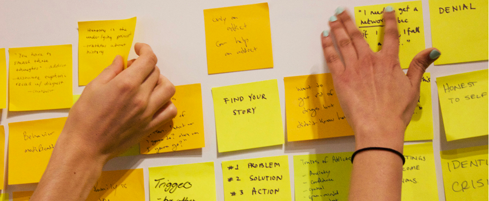
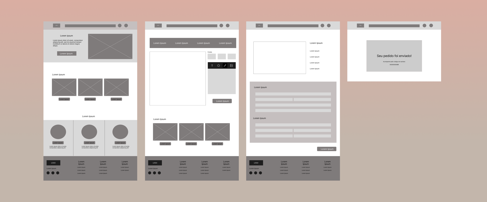

Visão Geral do Projeto
Objetivo: Criar um site e versão mobile intuitivos para personalização de blusas, permitindo aos usuários personalizar suas peças de maneira fácil e interativa.
Problema:
Os usuários que desejam personalizar suas blusas muitas vezes enfrentam dificuldades em encontrar plataformas intuitivas e eficientes. Os principais desafios incluem:- Interfaces complicadas e pouco intuitivas;
- Falta de opções de personalização;
- Visualização imprecisa do produto final;
- Processo de compra confuso.
PESQUISA E DESCOBERTAS
Realizamos entrevistas com potenciais usuários e identificamos que a maioria deseja:
- Facilidade no processo de customização;
- Visualização 3D ou mockups realistas;
- Opções diversas de tecidos, cores e estampas;
- Processo de compra simples e seguro.

IDEAÇÃO
Wireframes
Resultados
Após os testes com usuários, obtivemos:- 85% de satisfação com a facilidade de uso;
- Aumento de 40% na taxa de conversão em comparação com a plataforma anterior;
- Redução de 30% no tempo médio de personalização.